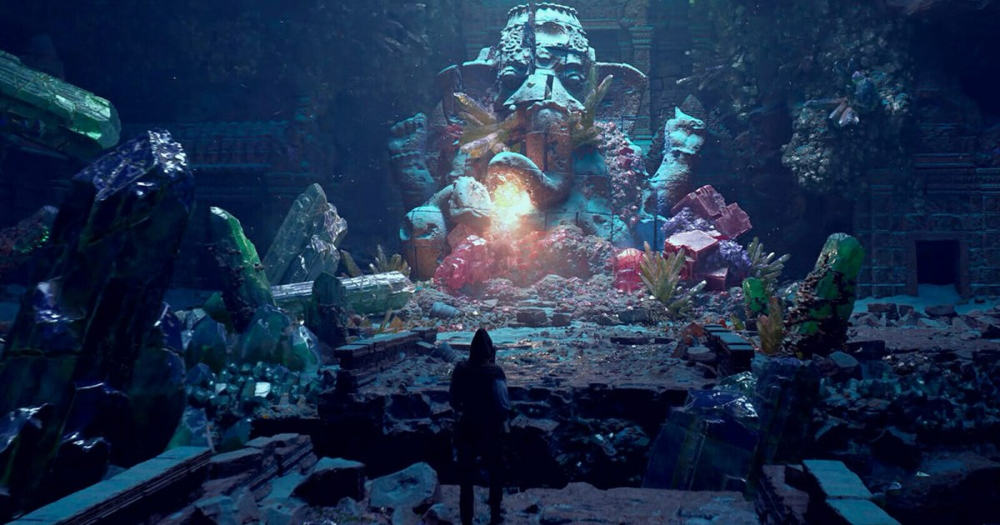

Houdini 程序化場景課程：從模組灰盒到岩石與水晶資產
Giovani Magana 的四小時課程以風格化奇幻場景介紹 Houdini 程序流程，搭配 ZBrush 與 Unreal Engine，涵蓋建築模組、資產庫、岩石和水晶製作。

Houdini ★★★★☆
完整分析
場景流程：由建築模組建立基礎
課程先在 Houdini 製作牆、地板與柱子，組成模組化灰盒，再細化各個構件；岩石示例以較少雕刻保留形狀控制與變化，重點是可重複使用的程序製作。
製作影響：資產庫連接材質整合
後續內容包括建立 Digital Asset Library 加快迭代、將物件融入環境，以及製作較複雜的主材質；水晶案例另涵蓋程序生成後的貼圖與著色準備，連結形狀與表面製作。
學習限制：需要已有 Houdini 基礎
介紹明確將對象設定為有基本 Houdini 經驗的中階美術，並導向 Gnomon Workshop 訂閱課程；這篇提供課綱與案例範圍，未提供可直接重建岩石或水晶的完整節點設定。
BRIEF｜來源已驗證；證據深度較有限，完整分析會明確區分已知資訊與待驗證事項。